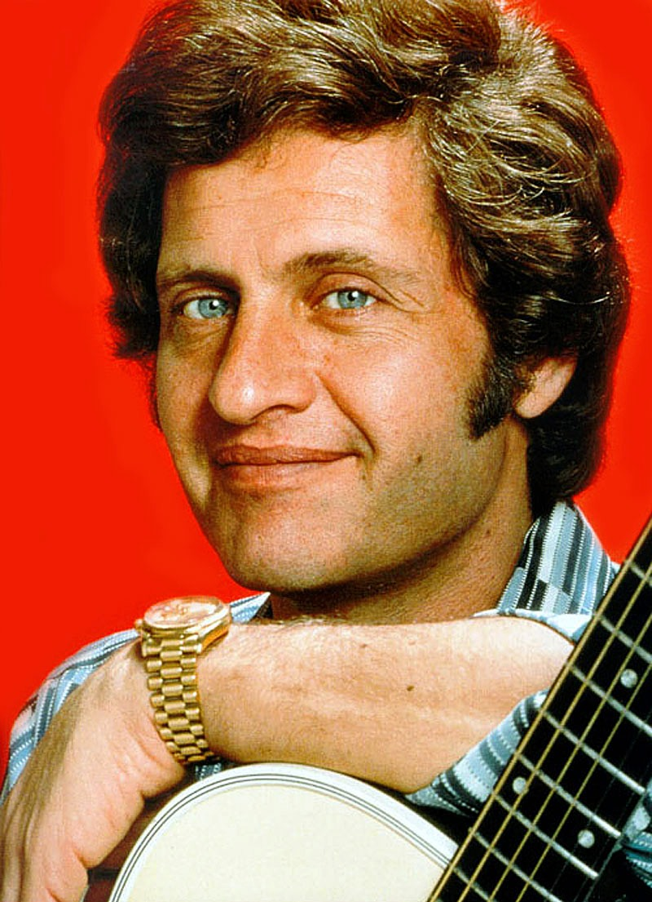

French A1 Music
Songs

Champs-Élysées by Joe Dassin, 1969
An internationally recognized French song, it has become a symbol of Paris and French life.
Genre: Chanson française, Pop
Skills Improved:
Speaking, Writing, Grammar, Cultural Awareness

Je veux by Zaz, 2010
A major hit worldwide, it promotes an anti-materialistic message, making it great for discussion in language learning.
Genre: Chanson, French Pop
Skills Improved:
Speaking, Writing, Grammar, Cultural Awareness
La vie en rose by Édith Piaf, 1947
A most famous French song. and has been convered by numerous artists. It has become a global symbol of romance and nostalgia. You've probably heard it in films (Madagascar!), advertisements and cultural references. Check out her other famous songs as well, such as Non, Je Ne Regrette Rien and more with this collection!
Genre: Chanson française
Skills Improved:
Speaking, Writing, Grammar, Cultural Awareness
What is the DELF? Not sure what your DELF level is? Click here to find out!
Tip! Use Collins' French-English Dictionary to refer to words you don't know!